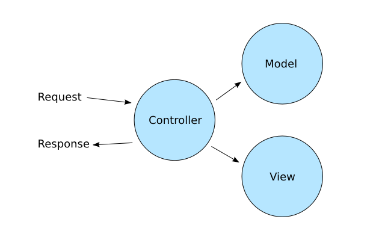

<!doctype html>
<html lang="sv">
<meta charset="utf-8" />
<title> MVC | ramverk1</title>

<!-- Mithril HTML Slideshow styles -->
<link href="css/mithril-slideshow.css" rel="stylesheet" />

<!-- Code formatting using highlight.js -->
<link rel="stylesheet" href="css/default.css">
<link rel="stylesheet" href="css/tomorrow.css">
<script src="js/highlight.pack.js"></script>

<!-- Text formatting using Markdown through showdown.js -->
<script src="js/showdown.min.js"></script>


<script data-role="slide" data-markdown type="text/html">
# ramverk1
## Model View Controller (MVC)
### Mikael Roos
</script>


<script data-role="slide" data-markdown type="text/html">
# Agenda

* Model classes
* MVC
* Design pattern
* Solid
* Cohesion / Coupling
* Inject dependencies

</script>


<script data-role="slide" data-markdown type="text/html">
# Vad är modellklasser och MVC?

</script>


<script data-role="slide" data-markdown type="text/html">
# Vad är en controller?

* Styrning
* Klistret mellan ramverket och applikationen
    * Hela applikationen i små applikationer
* Callbacks för varje url/path/query

</script>


<script data-role="slide" data-markdown type="text/html">
# Vad är en vy?

* Presentation
* En template-fil tillsammans med $data
* Rendera i en region av en (HTML)-sida
* Kan rendera godtyckligt svar, XML, JSON, mm

</script>


<script data-role="slide" data-markdown type="text/html">
# Modellklasser?

* Logik och data
* All kod som kan lyftas ut ur kontrollerklassen
* Tänk
    * En controller för webbplatsen
    * En kontroller för REST API
    * Delad kod lyfts ut i modellklass(er)
* Ett lager av klasser för applikationens logik och datahantering

</script>


<script data-role="slide" data-markdown type="text/html">
# Modellklasser...

* Strukturera koden för kontroller och modeller
* Modellklass
    * IpValidator
* Controllerklasser
    * IpValidatorController
    * IpValidatorAPIController

</script>


<script data-role="slide" data-markdown type="text/html">
# MVC

* Ett designmönster

</script>


<script data-role="slide" data-markdown type="text/html">
# MVC

* Model
* View
* Controller

</script>


<script data-role="slide" data-markdown type="text/html">

</script>


<script data-role="slide" data-markdown type="text/html">

</script>


<script data-role="slide" data-markdown type="text/html">


Model–view–presenter (MVP) for Graphical User Interface (GUI)
</script>


<script data-role="slide" data-markdown type="text/html">


Model–view–presenter (MVP) for Graphical User Interface (GUI), example Mithril
</script>


<script data-role="slide" data-markdown type="text/html">
# Liknande pattern

* Presentation–abstraction–control (PAC) (Drupal)
* Hierarchical model–view–controller (HMVC)
* Model–view–adapter (MVA)
* Model–view–viewmodel (MVVM)
* Model–view–presenter (MVP) (GUI)

</script>


<script data-role="slide" data-markdown type="text/html">
# Model

* Modellklasser
* Modellagret
* Affärslogik
* Applikationslogik
* Datalager

</script>


<script data-role="slide" data-markdown type="text/html">
# Tänk kodningsstruktur

* Tunna kontroller-klasser (bara ett lager)
* Dumma vyer (jobba mot $data)
* Logik och intelligens i modell-lagret
* Vem pratar med vem?
* Får en vy prata med en modell?

</script>


<script data-role="slide" data-markdown type="text/html">
# Kontroller + Vy

* är limmet som gör modell-lagret till en webbtjänst/applikation

</script>


<script data-role="slide" data-markdown type="text/html">
# MVC fördelar och organiserar

* Arbetsfördelning per kompetens
* Generell kodstruktur för arkitekturen av en applikation
* Sätt att prata om koden

</script>


<script data-role="slide" data-markdown type="text/html">
# Read about

* Framework implementation of MVC
    * Symfony
    * Laravel
    * Phalcon
    * Yii

</script>


<script data-role="slide" data-markdown type="text/html">
# Design pattern

</script>


<script data-role="slide" data-markdown type="text/html">
# Design pattern

* Software design pattern
    * "Reusable solution to a commonly occurring problem"
    * "Within a given context in software design"
* Formalized best practice

</script>


<script data-role="slide" data-markdown type="text/html">
# Design pattern...

* Bok GoF, Gang of Four (1987)
    * Design Patterns: Elements of Reusable Object-Oriented Software
* MVC is an architectural design pattern

</script>


<script data-role="slide" data-markdown type="text/html">
# Utveckla med design mönster

* Leta lösningar via mönster
* Terminologi för samtal
* Snabbare/säkrare utveckling
* Kvalitetssäkran
* Överanvänds?

</script>


<script data-role="slide" data-markdown type="text/html">
# Design mönster...

* Tänk dbwebb-strukturen som designmönster?
    * dbwebb tips, artikel, övning, uppgift
    * dbwebb kursmoment
    * dbwebb kurs
    * dbwebb kurspaket
* Formalisera, kommunicera, produktifiera, återanvänd

</script>


<script data-role="slide" data-markdown type="text/html">
# SOLID

* Five design principles

<!-- fixa även enkla kodexempel till varje princip? -->

</script>


<script data-role="slide" data-markdown type="text/html">
# SOLID

* Single responsibility
* Open/Closed
* Liskov substitution
* Interface segregation
* Dependency inversion

</script>


<script data-role="slide" data-markdown type="text/html">
# Single responsibility principle

* "A class should have only a single responsibility"

</script>


<script data-role="slide" data-markdown type="text/html">
# Open/closed principle

* "Software entities should be open for extension, but closed for modification."

</script>


<script data-role="slide" data-markdown type="text/html">
# Liskov substitution principle

* "Objects in a program should be replaceable with instances of their subtypes without altering the correctness of that program."

</script>


<script data-role="slide" data-markdown type="text/html">
# Interface segregation principle

* "Many client-specific interfaces are better than one general-purpose interface."

</script>


<script data-role="slide" data-markdown type="text/html">
# Dependency inversion principle

* One should "depend upon abstractions, [not] concretions."
</script>


<script data-role="slide" data-markdown type="text/html">
# SOLID

* Five design principles
* How can this help us i quality assurance and code communication?

</script>


<script data-role="slide" data-markdown type="text/html">
# Cohesion / Coupling

</script>


<script data-role="slide" data-markdown type="text/html">
# Cohesion / Coupling

* Koncept som hjälper oss samtala om koden
* Software metrics

</script>


<script data-role="slide" data-markdown type="text/html">
# Cohesion

* Hör sakerna ihop i klassen?

* "Degree to which the elements inside a module belong together"
* "Some unifying purpose or concept served by that class"

</script>


<script data-role="slide" data-markdown type="text/html">
# Coupling

* Hur hårt kopplade är olika klasser/moduler till varandra?

* "Degree of interdependence between software modules"
* "A measure of how closely connected two routines or modules are"

</script>


<script data-role="slide" data-markdown type="text/html">
> "Low coupling is often a sign of a well-structured computer system and a good design, and when combined with high cohesion, supports the general goals of high readability and maintainability."

</script>


<script data-role="slide" data-markdown type="text/html">
# Inject dependencies

* How to make a software unit testable?

* Low coupling
    * Inject all its dependencies
    * No "hard coded" dependency
    * Limit relations to other classes

</script>


<script data-role="slide" data-markdown type="text/html">
# Summera

* Designmönster
* MVC (och varianter)
    * Model (och dess förhållande till)
        * Controller
        * View
* SOLID
    * Design principles
* Cohesion / Coupling
    * Software metrics
* Inject dependencies

</script>


<script data-role="slide" data-markdown type="text/html">
# Avslutningsvis

* Frågor på det?

</script>


<script data-role="slide" data-markdown type="text/html">
</script>


<!-- include essential js-script -->
<script src="js/mithril.min.js"></script>
<script src="js/mithril-slideshow.js"></script>
